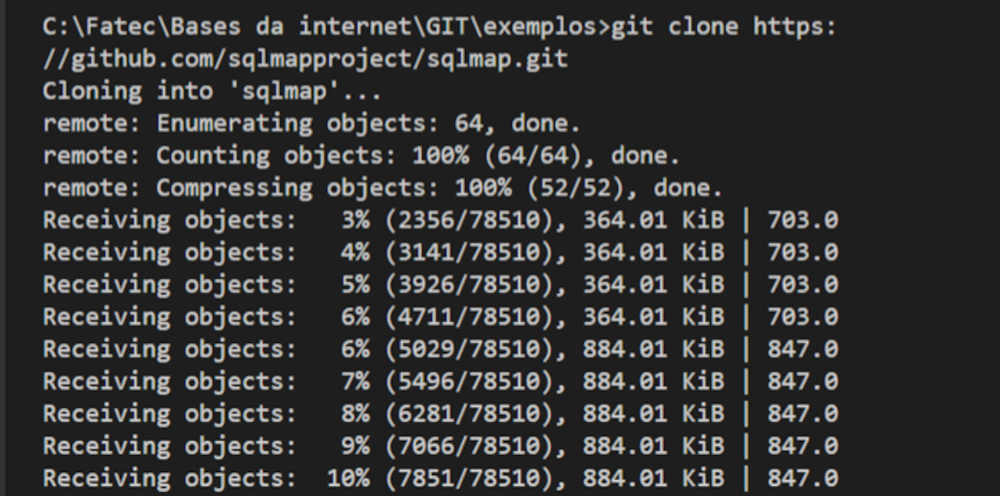
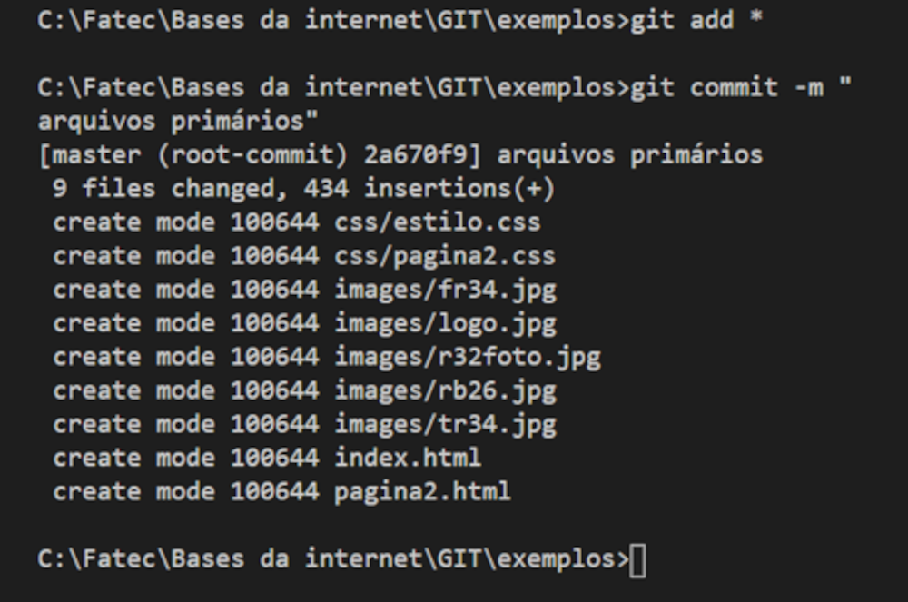

Quais os principais comandos do Git?
Abaixo você verá os principais comandos para que você consiga utilizar o Git da maneira correta e com a maior facilidade possível.
Git Clone
O git clone é um comando para baixar código fonte de repositórios em servidores.
Git clone https://link
Selecione o link do repositório que quem você deseja fazer o download para realizar alterações e execute o comando:

Espere o download acabar, e procure não escolher link de alguém com muitos arquivos grandes, vai demorar muito (não seja como eu ☹)
após isso o arquivo já estará em seu diretório pessoal como na imagem ao lado e poderá fazer as mudanças.
Git Branches
Comando utilizado para criar, listar e excluir branches.
Comando para criar: Comando para criar um branch local (no seu pc)
.Git branch "nome do branch"
Para criar uma branch no repositório remoto: execute o camando a seguir:
.git push -u remote "nome-da-branch""
Para ver as branches:
.git branch or git branch --list
Deletando uma branch:
.git branch -d "nome-da-branch"
Git Checkout:
Este é um dos comandos Git mais usados. Para trabalhar em uma branch, primeiro você precisa mudar para ela.
Usamos o git checkout principalmente para alternar de um branch para outro.
git checkout "nome-da-branch"
Há também um comando de atalho que permite criar e trocar para um branch ao mesmo tempo:
git checkout -b "nome-da-branch"
Git Status:
O comando status do Git fornece todas as informações necessárias sobre o branch atual.
Git Add:
Quando criamos, modificamos ou excluímos um arquivo, essas alterações ocorrerão em nosso ambiente local e não serão incluídas no próximo commit.Precisamos usar o comando git add para incluir as alterações de um arquivo em nosso próximo commit.
Para adicionar um arquivo e receber um commit:
.git add "arquivo"
Para adicionar tudo de uma vez:
Git add * ou git add .
O comando git add não altera o repositório e as alterações não são salvas até usarmos o git commit.
Git Commit:
Este comando é como definir um ponto de verificação no processo de desenvolvimento, para o qual você pode voltar mais tarde, se necessário.

.git commit -m "mensagem explicando a mudança ou origem do código"
Caso sua pasta tenha muitos arquivos e você queira comentar todos, utilize o comando “git add *”, clique em enter e na linha seguinte utilize o comando *git commit -m "mensagem explicando a mudança ou origem do código", e pronto, todos os seus arquivos estão comentados.
Git Push
Após confirmar as alterações, a próxima coisa que você deseja fazer é enviar as alterações para o servidor remoto.
O comando git push abaixo envia e salva suas confirmações no repositório remoto:
.git push origin master
No entanto, se seu branch for criado recentemente, você também precisará fazer upload do branch com o seguinte comando:
.git push -u origin "nome-do-branch"
Git Pull
O comando git pull é usado para obter atualizações do repositório remoto. Usado para não haver divergências que podem acontecer caso uma pessoa já tenha subido uma versão modificada diferente de você, e por acaso os dois fizeram alterações no mesmo lugar, assim, executando este comando, o arquivo no repositório é atualizado para a sua máquina, assim você pode fazer as alterações necessárias para não ocorrer divergências proporcionado erros futuros.
O comando para utilizar o Git pull é:
.git pull origin master

Este exemplo não está totalmente correto pois meus arquivos estão corretos tanto no meu pc quanto no arquivo remoto, porém caso o seu aconteça o mesmo este problema, as informações que aparecerem tem que ser quase idênticas as informações adquiridas com o git push. Feito todas as alterações nos arquivos, é só adicionar um novo commit e subir o arquivo no GitHub novamente.
O comando GitPull é uma combinação de git fetch e git merge, o que significa que, quando usamos o git pull, ele recebe as atualizações do repositório remoto git fetch e aplica imediatamente as alterações mais recentes no seu local git merge.
Git Revert
Existem várias maneiras de desfazer nossas alterações local ou remotamente (depende do que precisamos), mas devemos usar esses comandos com cuidado para evitar problemas.
Uma maneira segura de desfazer os commits é usando git revert.
git revert 'número do hash'
O número do hash pode ser conseguido pelo comando:
.git log -- oneline
O código em hexadecimal (números e letras) é o numero Hash (SHA-1)
Git Merge
Quando você conclui o desenvolvimento em sua branch e tudo funciona bem, a etapa final é mesclar as branches, isso é feito com o comando git merge, para o comando ser executado com êxito, o comando tem que ser executado apenas na Branch master (principal).
git merge "nome-da-branch"
siga meu raciocínio, você acabou sua branch, mas quando vai fazer a merge entre o arquivo remoto e o seu, pode acontecer o famoso conflito, que acontece quando outra pessoa editou o documento e enviou o arquivo antes de você, tornado o arquivo master diferente do que está em sua maquina, como no exemplo a seguir:
O conflito é exibido no arquivo como na área selecionada acima, com isso você escolhe se quer manter o que esta no master, substituir pela sua modificação, deixar as duas e até mesmo comparar, o visual code dá essa possibilidade automática, após isso, altere os arquivos do seu gosto, salve, adicione o commit e é só executar o git push.
Assim as informações serão encaminhadas e atualizadas no arquivo remoto.